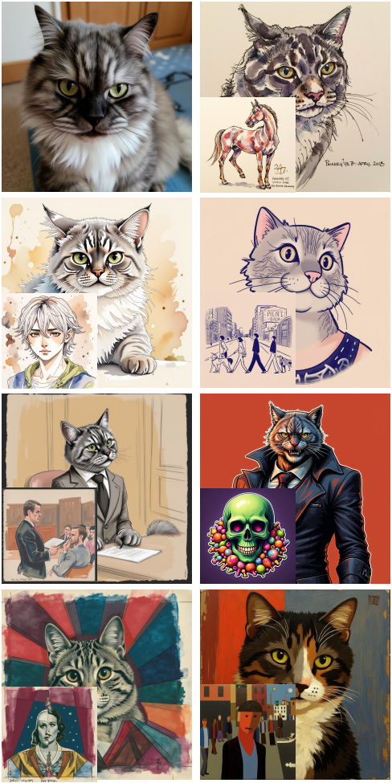
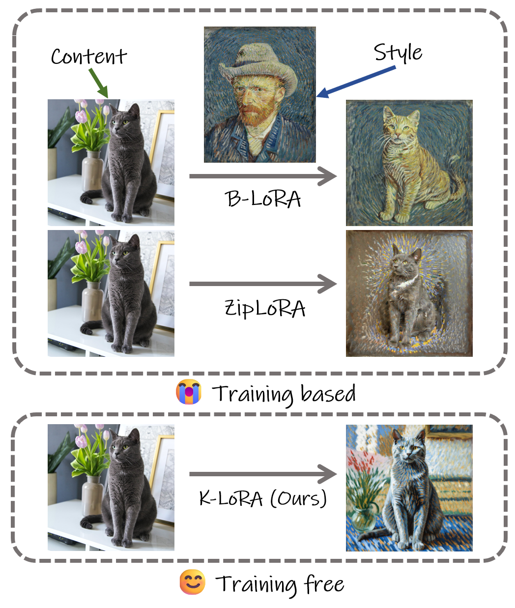
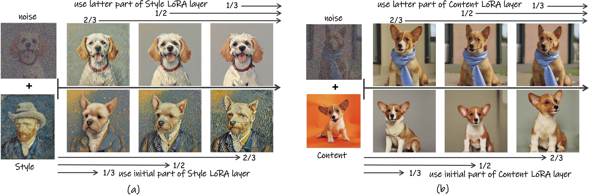
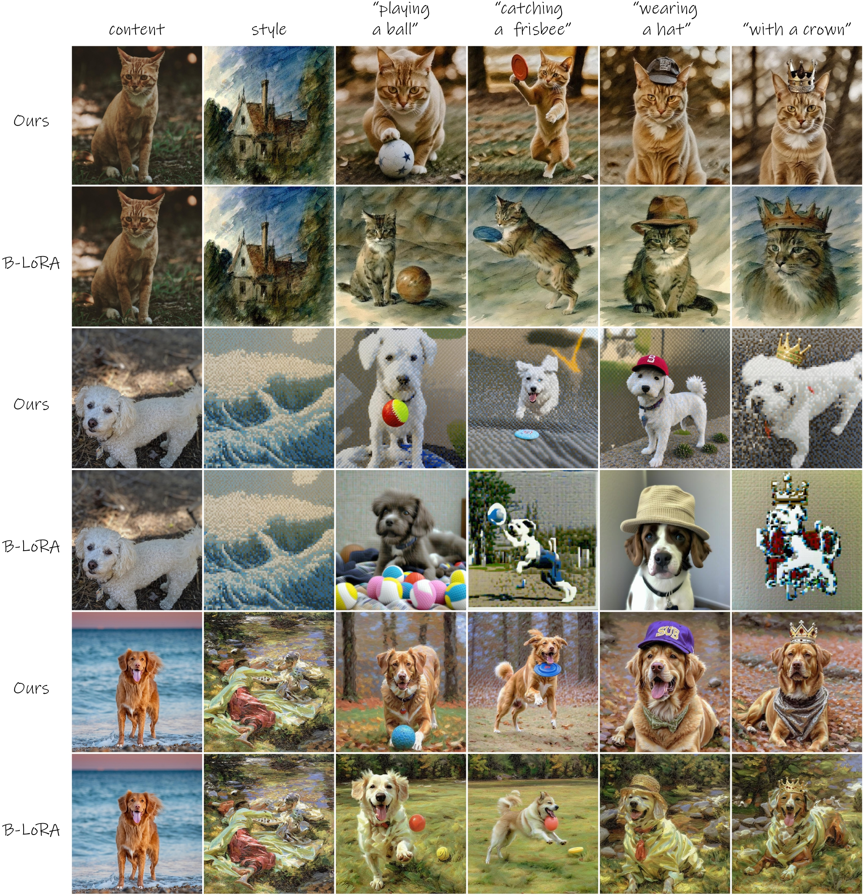
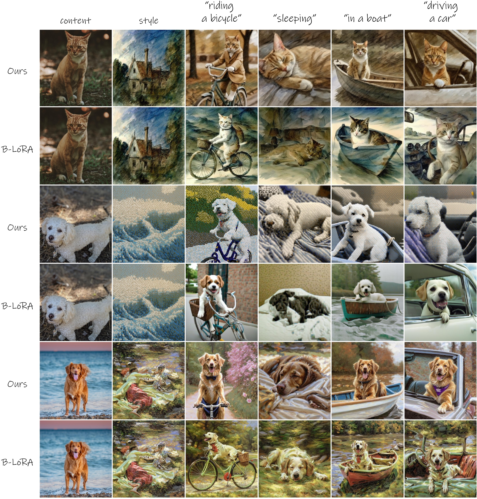

K-LoRA: Unlocking Training-Free Fusion of Any Subject and Style LoRAs
Ziheng Ouyang
Zhen Li
Qibin Hou
VCIP, School of Computer Science, Nankai
University

The content is located at the top left corner, while the remaining areas contain the generated images (using Flux), each accompanied by its corresponding style.

Our method supports advanced generative models such as Flux and Stable Diffusion, etc.
[Paper]
[code]
Abstract
Recent studies have explored combining different LoRAs to jointly generate learned style and content.
However, existing methods either fail to effectively preserve both the original subject and style
simultaneously or require additional training. In this paper, we argue that the intrinsic properties of LoRA
can effectively guide diffusion models in merging learned subject and style. Building on this insight, we
propose K-LoRA, a simple yet effective training-free LoRA fusion approach. In each
attention layer, K-LoRA compares the Top-K elements in each LoRA to be fused, determining
which LoRA to select for optimal fusion. This selection mechanism ensures that the most representative
features of both subject and style are retained during the fusion process, effectively balancing their
contributions. Experimental results demonstrate that the proposed method effectively integrates the subject
and style information learned by the original LoRAs, outperforming state-of-the-art training-based
approaches in both qualitative and quantitative results.
Visual results
K-LoRA generally achieves a seamless integration of objects and styles, effectively
preserving fidelity and preventing distortion. The images below are generated using Stable Diffusion.

_page-0001.jpg)
Comparison results
Compared to other methods, K-LoRA We provide comparisons with Direct Merge, Joint Training,
B-LoRA and ZipLoRA.

Conclusions
We derive key conclusions. (i) Only a restricted number of diffusion prediction steps are sufficient to
retain the original effect. (ii) When applying LoRA, the initial diffusion steps are responsible for
reconstructing the object and capturing larger texture details, while the subsequent steps focus on
enhancing and refining the finer details of the object and the texture in style.

Method
We utilizes the Top-K function to select the important LoRA weights in each forward layer based on the sum
of matrix elements.

Prompt control
We conducted experiments to evaluate whether our method can modify the object's actions, the surrounding
environment, or introduce new contents through prompt adjustments. We also used B-LoRA to obtain comparison
results. (In B-LoRA, for cases where testing with multiple seeds fails to generate the original object after
adding additional prompts, we append the class of the original content after <c>.)

